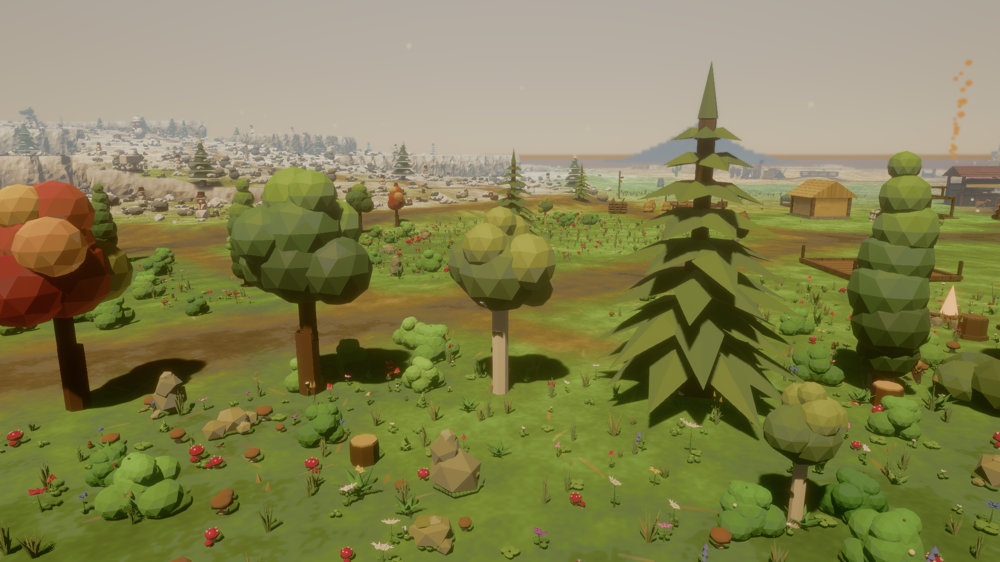
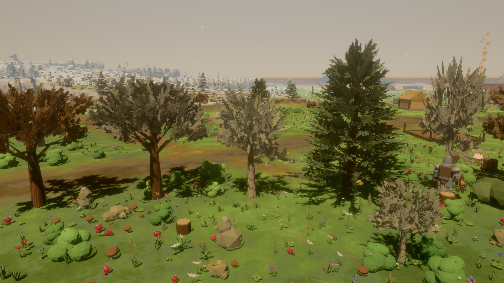
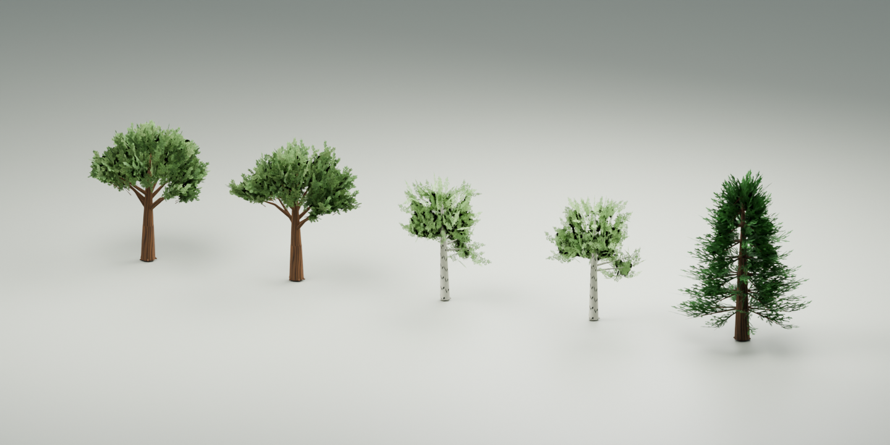

Warbell / Studium wykonalności / 08.10.2026
Naturalniejsze drzewa.
Zmierzony koszt.
Pięć modeli wykonanych przez subagenta Sol w Blenderze przez MCP, zaimportowanych do prawdziwej sceny gry i porównanych z drzewami z aktualnego maina.
RTX 5060 Ti · 16 GBi5-12400F1920 × 1080Release · High118 podmienionych drzew
Porównaj w grze


Oryginalne
Blender MCP + Sol
To zrzuty z Warbell, nie render Blendera. Kamera i pora dnia są takie same; wiatr, postacie i inne animacje mogą mieć różne fazy.
Koszt przekracza przyjęty próg w co najmniej jednym widoku lasu.Pipeline jest wykonalny: modele i tekstury działają w grze, a podmiana pozostaje opcjonalna. Z bliska gałęzie i sosna wyglądają naturalniej; z daleka korony są cieńsze i ciemniejsze. Finalna akceptacja wyglądu wymaga oceny całości sceny, w tym nadal stylizowanego terenu i krzewów.
Wyniki po usunięciu limitu okna w tle
Wartości są medianą z trzech 60-sekundowych uruchomień na wariant. Low to dodatkowa pojedyncza para. FPS = 1000 / średni czas klatki. Mniejsza wartość w ms jest lepsza.
Próg ustalony przed pomiarami: ≤10% wzrostu średniej, p95 oraz sumy etapów GPU. GPU Σ jest sumą zarejestrowanych etapów, a nie niezależnym pełnym czasem GPU; etapy mogą się nakładać. Wyniki nie opisują wydajności laptopów ani kart zintegrowanych.
Różnica FPS wymaga ostrożnej interpretacji.Czas klatki zmieniał się znacznie między uruchomieniami, podczas gdy czasy GPU pozostawały stabilniejsze. W szczególności mediany zbliżenia lasu nie izolują wpływu drzew od zmienności pozostałej pracy systemu. Nie traktujemy procentowej zmiany FPS jako ustalonego kosztu samych drzew. Decyzję o pozostawieniu eksperymentu uzasadnia powtarzalny wzrost GPU.
Zakresy prób, p99 i pamięć
Minimum–maksimum między uruchomieniami; p99 i RSS są medianami wyników prób. Wszystkie czasy w ms. RSS to przybliżony odczyt istniejącego monitora, nie dokładny pomiar pamięci samych drzew.
Metoda i ograniczenia
- Ta sama binarka A/B; przełącznik
FOREST_BLENDERTREES=1. Identyczna kamera, jakość, rozdzielczość i oświetlenie. VSync wyłączony, pętla Bevy działa ciągle także bez fokusu. - 15 sekund rozgrzewki od WorldReady; aktywna symulacja. Ustawienia i zapisy gracza odizolowane przez APPDATA. Brak renderowania Blendera i kompilacji podczas serii.
- Wstępne testy wykryły niezależny limit 60 Hz nieaktywnego okna Bevy. Wyniki
main-natural-* i ab-* są diagnostyczne, wykluczone z powyższej tabeli. - 118 podmian w kampanii: 112 drzew leśnych i 6 przy osadzie. Drzewa martwe, pniaki, sad z owocami i roślinność pozostałych biomów zachowują obecne modele. RTS pominięty zgodnie z zakresem.
- Brak osobnych poziomów geometrii LOD. Wspólna tekstura ma mipmapy; ich alfa korzysta z heurystyki, kora pozostaje nieprzezroczysta. Materiał jest współdzielony przez pień i liście.
- Próba trwa minutę na uruchomienie; nie zastępuje wielogodzinnego testu stabilności ani szczegółowego profilowania systemów CPU.
Modele, walidacja i odtwarzanie
Dwa dęby, dwie brzozy i sosna: 1170–1668 trójkątów/model, jeden atlas 1024×1024. Pliki GLB i JSON zgadzają się w atrybutach do 6e-7. Pięć GLB: 0 błędów i 0 ostrzeżeń walidatora Khronos. Testy logiki: 325 jednostkowych + 1 integracyjny przeszły.
Edytowalne źródło: warbell_trees.blend. Instrukcja generowania i licencje. Testy odtwarza python tools/tree_study_suite.py; instrukcja protokołu jest w docs/tree-study-protocol.md.
Interaktywną grę uruchamia scripts/preview-blender-trees.ps1, a wariant oryginalny ten sam skrypt z -OriginalTrees.
Źródło studyjne
Ten obraz pochodzi z Blendera i pokazuje geometrię oraz atlas w neutralnym oświetleniu. Nie służył do pomiaru FPS.
